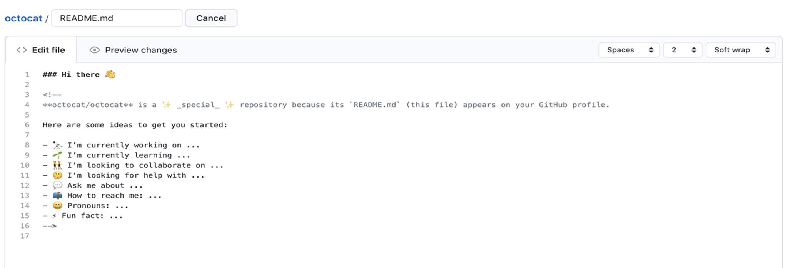

Git is a free and open-source distributed version control system
designed to help developers manage and track changes in their code. It
allows multiple people to collaborate on a project, maintain different
versions of the code, and ensure that changes are documented and
reversible.

What is the purpose of a README file?
A README file serves as an introduction and guide to a project,
typically found in the root directory of a codebase or repository.
It provides essential information to help users and contributors
understand the project and how to interact with it effectively.
What is the purpose of a wireframe?
A wireframe is a visual blueprint or schematic representation of a
user interface (UI) for a website, application, or software. It
outlines the structure, layout, and hierarchy of elements on a
page without focusing on design details like colors, images, or
fonts.Helps designers and developers conceptualize the structure
of a page or interface.
What is a branch in Git?
A branch in Git is a pointer to a specific commit in a
repository's history, allowing you to work on different versions
of a project simultaneously. It is commonly used to develop
features, fix bugs, or experiment without affecting the main
codebase.